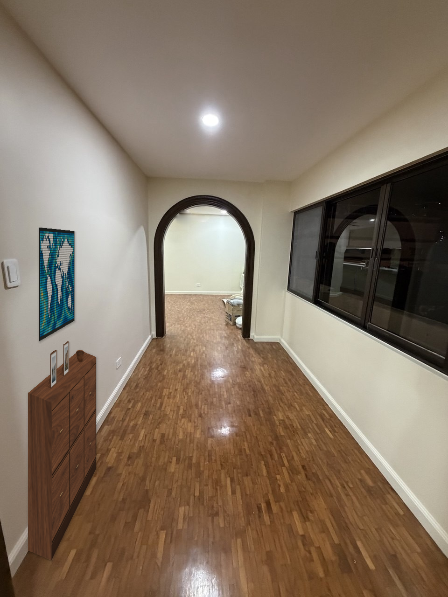
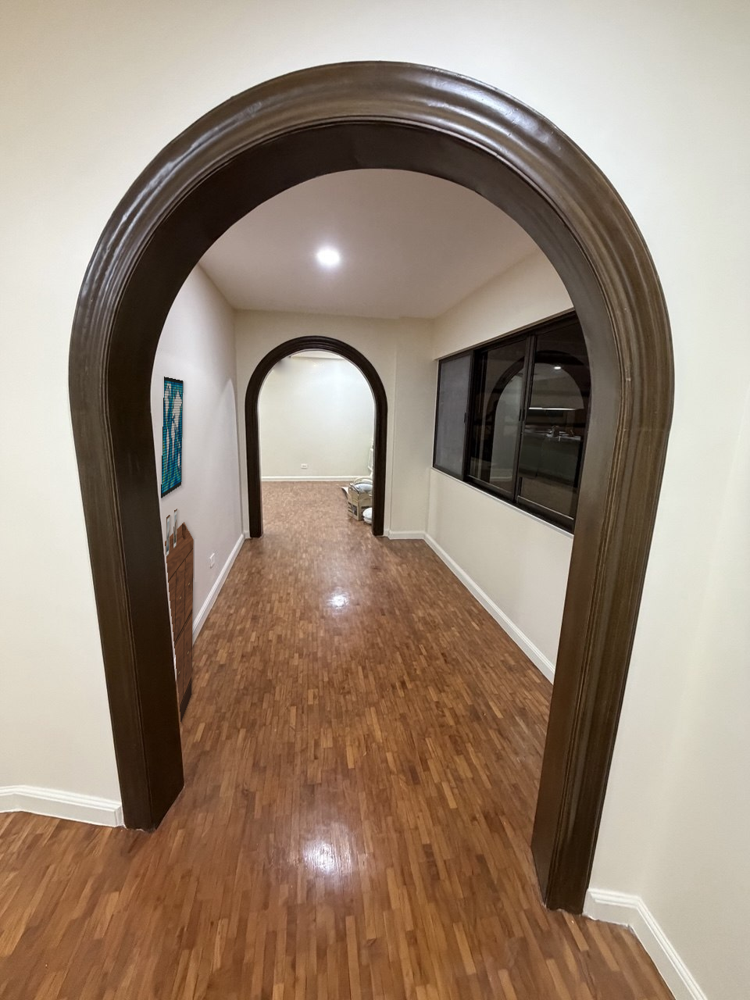
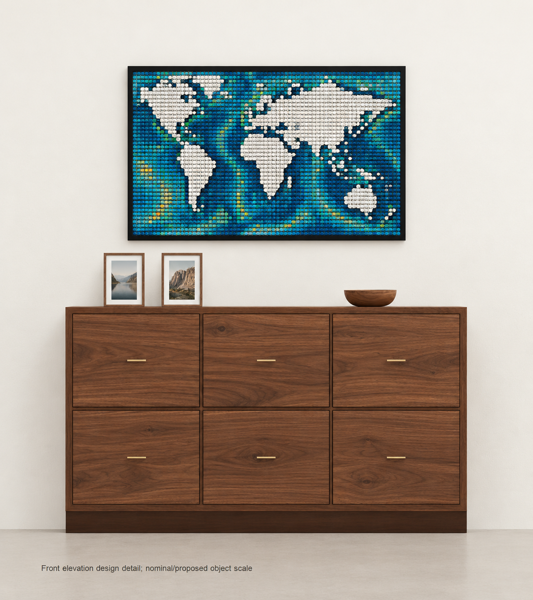

Unit 408 · Hallway · reviewed design H1
Walnut Gallery
A low walnut cabinet gives the LEGO map a calm backdrop. Six drawers in three columns, straight brass pulls and a solid floor plinth add closed storage without crowding the display.
Two actual hallway viewpointsNo ceiling fanProposed 1500 × 350 × 850 mm cabinet


Front detail

These are design visualizations, not as-built photographs or purchase approval. Both room views look toward dining; no reverse view is implied. Cabinet depth, display-object depth, room clearances, camera calibration and installation fit still need site verification. The LEGO artwork and small props are illustrative. The publication copies include a limited cleanup of a photographer reflection in glass; the accepted originals are preserved.